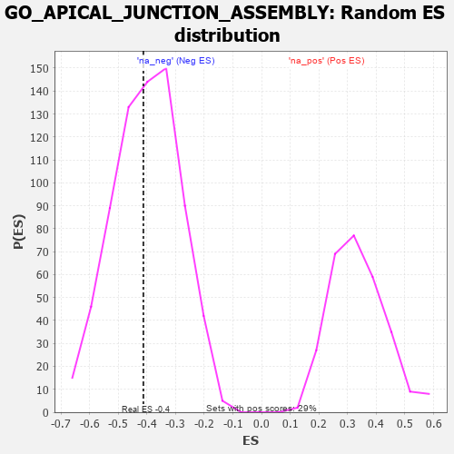

| | | Dataset | 7d |
| Phenotype | NoPhenotypeAvailable |
| Upregulated in class | na_neg |
| GeneSet | GO_APICAL_JUNCTION_ASSEMBLY |
| Enrichment Score (ES) | -0.4124962 |
| Normalized Enrichment Score (NES) | -1.0268382 |
| Nominal p-value | 0.44257703 |
| FDR q-value | 0.8339413 |
| FWER p-Value | 1.0 |
Table: GSEA Results Summary
 Fig 1: Enrichment plot: GO_APICAL_JUNCTION_ASSEMBLY
Fig 1: Enrichment plot: GO_APICAL_JUNCTION_ASSEMBLY
Profile of the Running ES Score & Positions of GeneSet Members on the Rank Ordered List
| PROBE | GENE SYMBOL | GENE_TITLE | RANK IN GENE LIST | RANK METRIC SCORE | RUNNING ES | CORE ENRICHMENT | | 1 | SRF | | | 542 | 0.615 | 0.0124 | No |
| 2 | TBCD | | | 1338 | 0.422 | -0.0322 | No |
| 3 | MPP5 | | | 2362 | 0.251 | -0.1279 | No |
| 4 | MPP7 | | | 2606 | 0.211 | -0.1308 | No |
| 5 | PARD3 | | | 3584 | 0.063 | -0.2454 | No |
| 6 | PKN2 | | | 4060 | -0.017 | -0.3029 | No |
| 7 | ARL2 | | | 4254 | -0.050 | -0.3206 | No |
| 8 | WNT11 | | | 4282 | -0.056 | -0.3166 | No |
| 9 | STRN | | | 4307 | -0.060 | -0.3117 | No |
| 10 | APC | | | 4558 | -0.107 | -0.3291 | No |
| 11 | DLG5 | | | 4619 | -0.121 | -0.3208 | No |
| 12 | WDR1 | | | 4824 | -0.163 | -0.3251 | No |
| 13 | DLG1 | | | 4860 | -0.169 | -0.3073 | No |
| 14 | FZD5 | | | 5386 | -0.292 | -0.3350 | No |
| 15 | RAB13 | | | 5870 | -0.425 | -0.3399 | Yes |
| 16 | ROCK1 | | | 6152 | -0.520 | -0.3071 | Yes |
| 17 | NPHP4 | | | 6991 | -0.931 | -0.2904 | Yes |
| 18 | FBF1 | | | 7241 | -1.111 | -0.1760 | Yes |
| 19 | NPHP1 | | | 7791 | -2.041 | 0.0226 | Yes |
Table: GSEA details [plain text format]

Fig 2: GO_APICAL_JUNCTION_ASSEMBLY: Random ES distribution
Gene set null distribution of ES for GO_APICAL_JUNCTION_ASSEMBLY